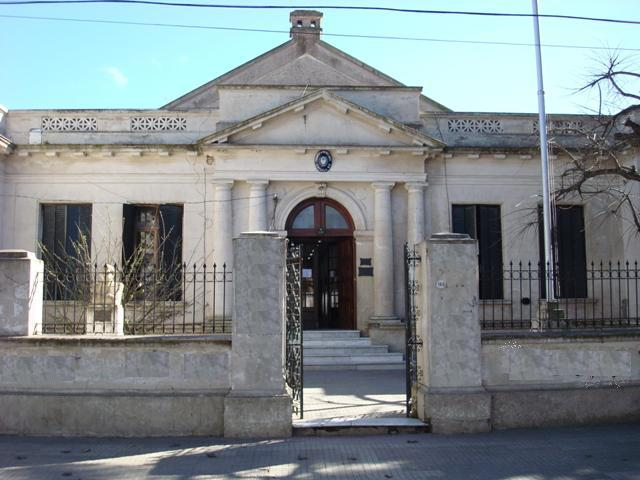

Formando docentes y técnicos comprometidos con la educación y el desarrollo social.
El Instituto Superior de Formación Docente y Técnica N° 57 "Juana Paula Manso" de Chascomús fue fundado oficialmente el 22 de mayo de 1973 por Resolución Ministerial N° 667/73. Su historia se remonta al 28 de junio de 1972, cuando comenzó a funcionar como anexo del Instituto N° 9 de La Plata. Desde entonces, ha crecido en oferta académica y matrícula, consolidándose como una institución clave en la formación docente y técnica de la región.
Con más de 50 años de trayectoria, el instituto ofrece carreras de nivel superior en áreas como educación inicial, inglés, enfermería y ciencia de datos, entre otras, brindando una formación de calidad y compromiso social.
